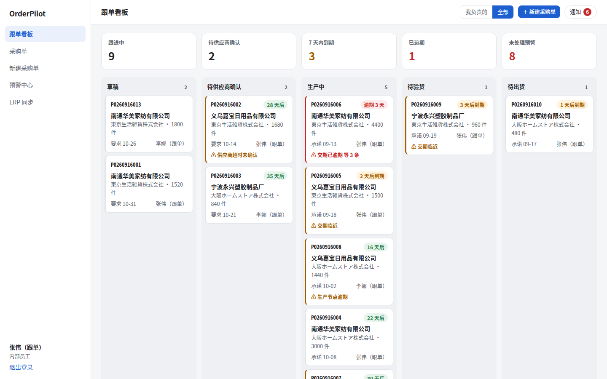
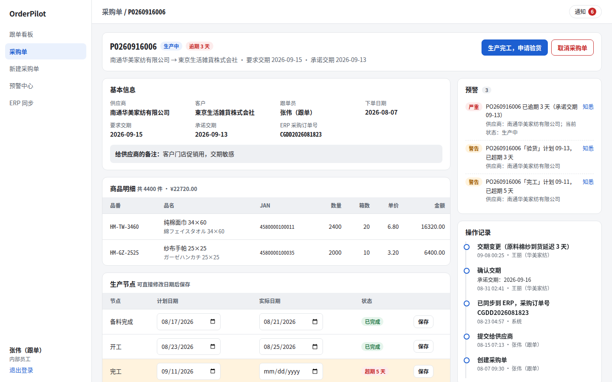
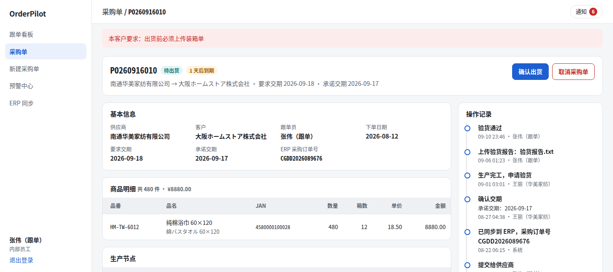
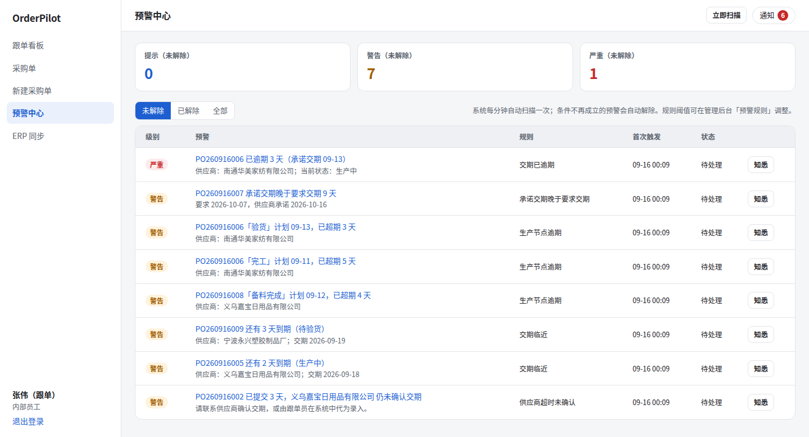
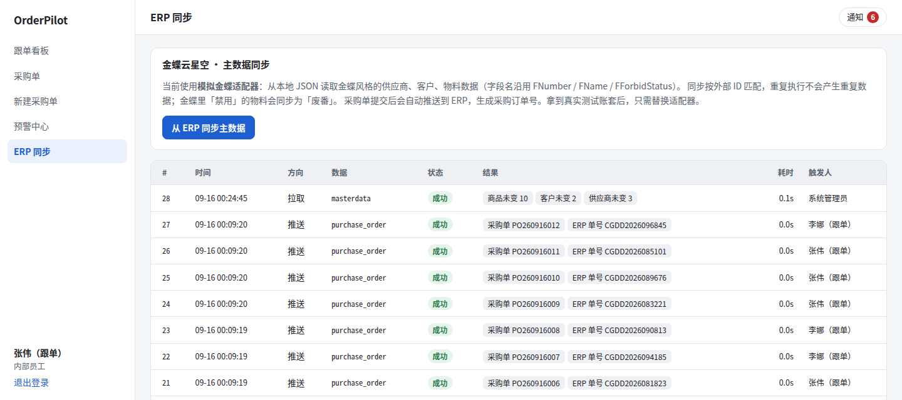
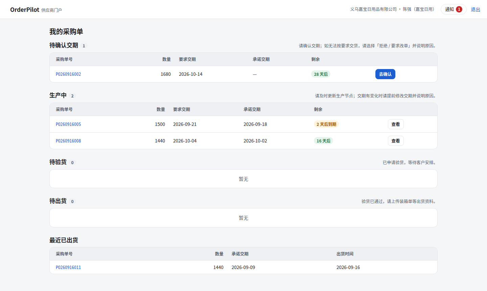
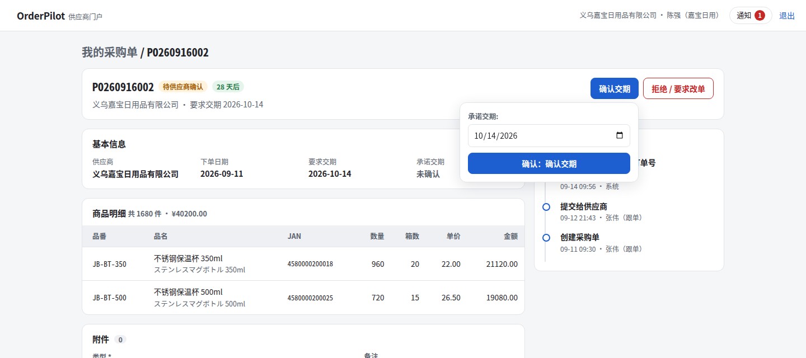
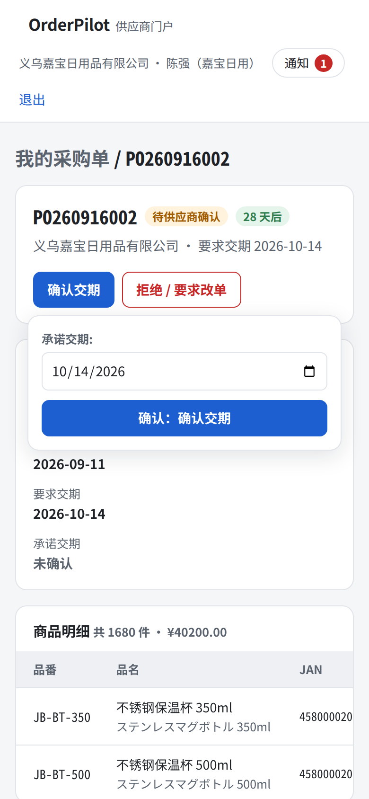

OrderPilot MVP：系统现状
面向中小跨境/外贸公司的轻量智能跟单工作台。
当前版本打通了采购单跟单主线，可以在本机完整演示：从 ERP 同步主数据，到供应商在门户确认交期、更新生产节点，再到验货和出货，全程有延期预警、通知和操作记录。
1概览
2个界面：内部工作台 + 供应商门户
8个采购单状态
5条内置预警规则
17个数据模型
≈3,800行 Python（不含测试）
38项自动化测试
定位：这是用来演示和验证需求的 MVP，不是可以直接交付客户的产品。ERP 用的是模拟的金蝶数据，邮件只打印到终端，也还没有生产环境的部署配置。详见 第 11 节。
2现在能做什么
跟单员
内部员工 · 工作台
- 跟单看板：按状态分列，顶部显示跟进中、7 天内到期、已逾期、未处理预警；卡片边框颜色表示预警级别
- 新建、编辑采购单：商品明细、要求交期、给供应商的备注、内部备注
- 提交给供应商后，自动推送到 ERP，生成采购订单号
- 验货通过或退回生产，确认出货（货代、提单号、柜号、预计到港）
- 可以代供应商录入交期和生产节点，比如供应商在微信上回复的情况
- 预警中心：知悉、立即扫描；通知铃铛
- ERP 同步页：手动同步主数据，查看每次同步的结果
供应商
外部账号 · 供应商门户
- 只看得到自己的采购单，按待确认、生产中、待验货、待出货分组
- 确认交期，或"拒绝 / 要求改单"（必须写原因）
- 更新生产节点的计划日期和实际日期
- 修改交期（必须写原因），系统自动通知跟单员
- 上传装箱单、发票、验货报告等附件
- 看不到终端客户是谁，也看不到内部备注，免得工厂绕过贸易公司直接接触客户
系统
后台自动执行
- 从（模拟的）金蝶同步供应商、客户、物料：重复执行不会产生重复数据，金蝶里禁用的物料会同步为"废番"
- 每分钟扫描预警：同一个问题不会重复报警，条件解除后预警自动关闭
- 站内信 + 邮件通知，由 Celery 异步投递
- 完整的操作时间线和交期变更历史，这是以后判定罚款的依据
- 业务校验：含废番商品的采购单不能提交；承诺交期不能早于今天
- 客户专属规则：演示扩展要求"出货前必须上传装箱单"，写在扩展里，没有改核心代码
3界面截图
截图中的公司、商品和人名都是虚构的演示数据。点击截图可以查看原图。
内部工作台



extensions/demo_jp 里的规则拦下。

供应商门户



4采购单流程

| 操作 | 状态变化 | 谁可以操作 | 需要填写 / 校验 |
|---|---|---|---|
| 提交给供应商 | 草稿 → 待供应商确认 | 跟单员 | 至少一行商品；不能含废番商品。提交后自动推送 ERP、通知供应商 |
| 确认交期 | 待确认 → 生产中 | 供应商（跟单员可代录） | 承诺交期，不能早于今天；自动排出生产节点计划 |
| 拒绝 / 要求改单 | 待确认 → 草稿 | 供应商（跟单员可代录） | 原因 |
| 生产完工，申请验货 | 生产中 → 待验货 | 供应商（跟单员可代录） | — |
| 验货通过 | 待验货 → 待出货 | 跟单员 | — |
| 验货不合格 | 待验货 → 生产中 | 跟单员 | 原因 |
| 确认出货 | 待出货 → 已出货 | 跟单员 | 出货日期、货代、提单号、柜号、预计到港；演示扩展要求已上传装箱单 |
| 取消 | 出货前任意状态 → 已取消 | 跟单员 | 原因 |
生产中和待验货的采购单可以随时修改交期（必须写原因）。每次修改都会记入交期变更历史，并通知对方。
"已结算"状态出现在架构设计里，MVP 还没有实现，结算模块在后续计划中。
5预警规则
| 规则 | 级别 | 触发条件 | 默认参数 |
|---|---|---|---|
| 供应商超时未确认 | 警告 | 采购单提交后超过 N 天，供应商仍未确认交期 | N = 2 天 |
| 交期已逾期 | 严重 | 跟进中的采购单超过承诺交期（还没确认的按要求交期） | — |
| 交期临近 | 警告 | 生产中或待验货的采购单，N 天内到期 | N = 3 天 |
| 承诺交期晚于要求交期 | 警告 | 供应商承诺的交期晚于客户要求的交期 | — |
| 生产节点逾期 | 警告 | 生产中的采购单，某个节点超过计划日期仍未完成 | 宽限 0 天 |
- 规则的启用状态、级别和参数，都可以在管理后台的"预警规则"里调整。
- 新预警会通知负责的跟单员；同一个问题在解除前只报一次。
- 客户扩展可以用同一套注册机制新增规则，或覆盖内置规则。
6架构落地情况
对照 架构设计 中的模块划分：
已实现 MVP 中可用部分实现 接口或基础已有未开始
| 模块 | 状态 | 现状 |
|---|---|---|
platform/accounts | 已实现 | 自定义 User（内部员工 / 供应商）、行级隔离 for_user()、django-rules 权限规则 |
platform/workflow | 已实现 | 状态机（带行锁防并发）、guard 扩展点、事务提交后分发的领域事件 |
platform/extensions | 已实现 | 扩展点注册表；extensions/demo_jp 演示客户扩展 |
platform/alerts | 已实现 | 规则引擎、去重、自动解除、通知；由 Celery beat 定时扫描 |
platform/audit | 已实现 | 操作日志（单据时间线）；采购单字段变更历史（django-simple-history） |
platform/notifications | 部分实现 | 站内信、邮件渠道、渠道注册表；用户订阅偏好、每日汇总、企业微信和钉钉渠道还没做 |
platform/attachments | 部分实现 | 通用附件，下载时校验权限；目前只存本地磁盘，S3 / OSS 未接 |
platform/integrations | 部分实现 | ERP 适配器接口、模拟金蝶适配器、同步任务、外部 ID 映射；真实金蝶 WebAPI 未接 |
platform/importer | 未开始 | Excel / 单据导入引擎 |
platform/ai | 未开始 | AI 辅助：列映射建议、邮件解析、报表摘要 |
trade/masterdata | 部分实现 | 供应商、客户、商品（品番、JAN、箱入数、废番）；门店、仓库、供应商商品关系还没做 |
trade/purchasing | 已实现 | 采购单、明细、生产节点、交期变更、预警规则、事件订阅、ERP 推送 |
trade/shipping | 部分实现 | 出货记录；报关、货代的系统对接还没做 |
trade/sales | 未开始 | 客户订单（首单 / 翻单） |
trade/finance | 未开始 | 供应商发票对账、货款、罚款 |
trade/replenishment | 未开始 | 销量 / 库存快照、补货建议 |
workbench / portal | 已实现 | 内部工作台、供应商门户，支持手机访问 |
扩展字段 FieldDefinition | 部分实现 | 核心模型已有 extra JSON 字段；字段定义表和表单渲染还没做 |
| 国际化 | 部分实现 | i18n 已开启，模型字段已用 gettext 标注；日文界面还没翻译 |
| 部署 | 未开始 | 目前只有开发用的 docker-compose（PostgreSQL + Redis）；生产镜像、nginx、备份还没做 |
7本地运行
需要 Docker 和 uv。
# 1. 启动 PostgreSQL（端口 5436）和 Redis（端口 6381），两者都只监听本机
docker compose up -d --wait
# 2. 安装依赖、建表、导入演示数据
uv sync
uv run python manage.py migrate
uv run python manage.py seed_demo # 账号使用随机密码，写入 .demo-credentials
# 只在本机演示、想用简单密码时：seed_demo --simple-passwords
# 重建数据：seed_demo --reset
# 3. 启动 Web（终端 1）和 Celery worker + beat（终端 2）
uv run python manage.py runserver 8010
uv run celery -A config worker -B -Q default,sync,notify -c 1 -l info浏览器打开 http://localhost:8010/ 。用 cat .demo-credentials 查看演示账号的密码。
在云服务器上用公网访问时：把 .env.example 复制成 .env，然后：
DJANGO_ALLOWED_HOSTS加上服务器的 IP 或域名- 设置
DJANGO_DEBUG=false - 把
DJANGO_SECRET_KEY换成随机值
静态文件由 WhiteNoise 提供，关闭调试模式后样式照常加载：
uv run python manage.py runserver 0.0.0.0:8000注意：修改 .env 后要完全停止再重新启动服务，开发服务器的自动重载不会重新读取 .env。
8演示脚本（约 10 分钟）
| 账号 | 角色 | 登录后进入 |
|---|---|---|
zhang / li | 跟单员（内部） | 跟单看板、采购单、预警中心、ERP 同步 |
admin | 管理员 | 同上，外加管理后台（主数据、预警规则阈值等） |
huamei / jiabao / yongxing | 供应商 | 供应商门户 |
- 跟单看板（
zhang）：先看顶部的数字，再看卡片边框的颜色。 - 逾期单：打开红色边框的那张单，看交期变更记录、超期的生产节点和操作时间线。
- 新建并提交采购单：选供应商"南通华美家纺"，加上商品，保存后提交。详情页会出现 ERP 采购订单号，供应商会收到通知。
- 供应商确认（
huamei）：在门户里确认交期，或者选"拒绝 / 要求改单"并写原因；之后更新生产节点、上传附件。 - 回到跟单员：通知铃铛上有新消息；预警中心可以点"立即扫描"。
- 客户专属规则：对"待出货"的那张单点"确认出货"，会被拦下，要求先上传装箱单。
- 废番拦截：提交那张含旧款毛巾的草稿，会被拦下。
- 行级隔离：换
jiabao登录，看不到华美家纺的任何采购单；直接改网址访问也会返回 404。
9账号与安全
已经做到的
- 行级隔离：供应商的所有查询都经过
for_user()，访问别家供应商的数据一律返回 404，测试覆盖了这一点。 - 附件：不直接对外提供文件目录，下载时按所属采购单校验权限。
- 演示账号：默认使用随机密码，保存在权限为 600 的
.demo-credentials里，终端不打印明文。rotate_demo_passwords可以一键更换所有演示账号的密码，旧密码和已登录的会话会立即失效。- 登录页默认不列出演示账号，由
ORDERPILOT_SHOW_DEMO_ACCOUNTS控制。
- 关闭调试模式：出错时不展示代码、配置和网址结构；静态文件改由 WhiteNoise 提供，不再依赖调试模式。
- 登录防暴力破解：同一用户名和 IP 连续失败 5 次后锁定 1 小时（django-axes）。
- 数据库和 Redis 只监听本机：外网连不上。Docker 会绕过 ufw 防火墙，所以直接把端口绑定在
127.0.0.1。 - 浏览器安全头：禁止页面被嵌入其他网站、禁止浏览器猜测文件类型；配好 HTTPS 后设置
DJANGO_HTTPS=true，即启用安全 Cookie、HTTPS 跳转和 HSTS。 - 配置：密钥、调试开关、允许访问的域名都从环境变量读取；
.env和凭据文件都被 git 忽略。
对外长期使用前还需要解决：
- 目前是 HTTP，密码在网络上明文传输，需要配域名和 HTTPS。
runserver只适合开发和演示，生产环境要换成 gunicorn + nginx。- 还没有双因素认证。
- 公网上的自动扫描是常态（部署几分钟内就会出现）。云服务器安全组应只放行必要的端口，演示期间最好只允许自己的 IP 访问。
10测试与质量
| 测试文件 | 数量 | 覆盖内容 |
|---|---|---|
test_workflow.py | 11 | 草稿到出货的完整流程、权限（供应商不能执行内部操作、不能操作别家的单）、状态校验、废番拦截、客户扩展规则、提交后的通知和 ERP 推送、交期变更 |
test_scoping.py | 6 | 门户行级隔离（404）、隐藏草稿、附件下载权限、供应商看不到终端客户和内部备注 |
test_pages.py | 8 | 主要页面都能正常渲染，表单新建采购单 |
test_alerts.py | 4 | 预警触发、去重、自动解除、按生产节点分别报警、停用规则 |
test_security.py | 4 | 关闭调试模式后静态文件照常提供、404 页不泄露调试信息、连续登录失败后锁定、安全响应头 |
test_demo_accounts.py | 3 | 登录页隐藏演示账号、随机换密码、凭据文件权限 |
test_sync.py | 2 | 主数据同步可重复执行、同步失败时有记录 |
- 运行
uv run pytest（需要先启动 PostgreSQL）；代码规范检查用uv run ruff check .，目前全部通过。 - 除了自动化测试，还用真实的 Celery worker 手工做过端到端验证：提交采购单后，通知投递和 ERP 推送都正常完成。
11暂未实现与下一步
MVP 暂未包含
- 真实的金蝶云星空 WebAPI 适配器：接口已经定义好，需要客户的测试账套
- Excel 导入、补货建议、客户订单、发票对账和罚款
- 企业微信、钉钉通知渠道；真实的邮件发送
- 日文界面、生产环境部署
建议的下一步
- 带着 MVP 去访谈：按照访谈提纲，找 3–5 位跟单员和老板，先听他们讲实际流程，最后再演示系统，收集"这里不对，我们其实是这样做的"这类反馈。
- 根据反馈决定第二个模块：补货建议和发票罚款二选一，看哪个痛点更集中。
- 找一家愿意试点的公司：拿到金蝶测试账套，写真实适配器，并用 Excel 导入他们的历史数据。